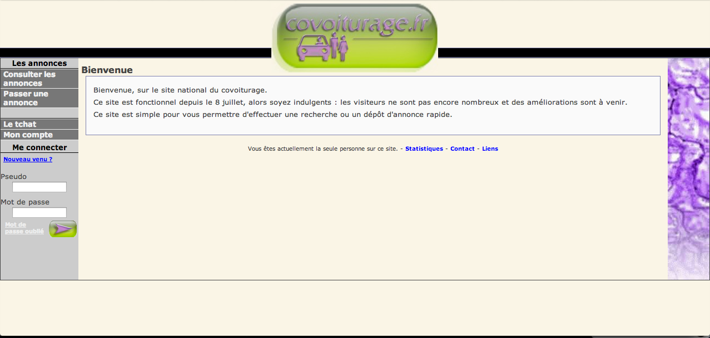
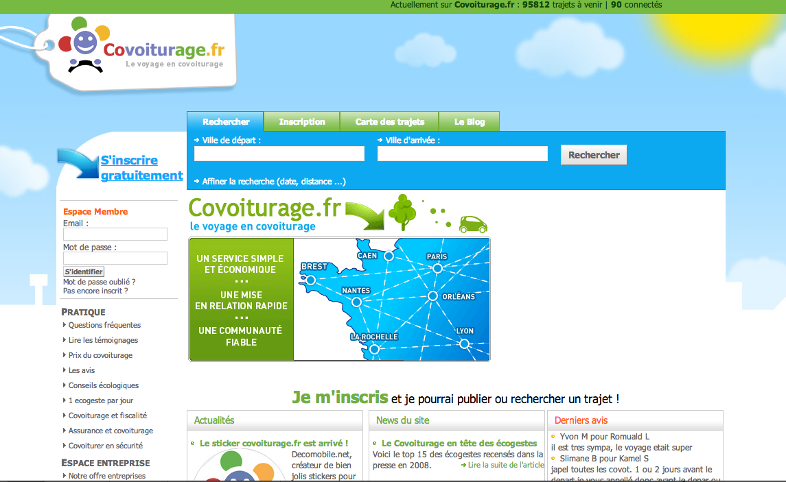

3 millions users
in 10 countries
Technical story of BlaBlaCar
Created by Olivier Dolbeau / @odolbeau
3 millions users ?
No !
5 millions users !
The story
How Blablacar is born ?
A man
who wants to see his family...
without tickets...
seeing plenty empty cars...
HAD AN IDEA !
The concept
How Blablacar works ?
Driver: Empty car ?

Passenger: Looking for a vehicle ?

Travel together !

Let's tech about technique !
Because it's sexy !
V1
Quick & dirty !
"Development" start in 2004
U know Joomla ?
But have you met Mambo ?
Don't be jealous !
OK the prototype works !
Now let's move !
V2
Plain old school PHP
Development start in January 2008
Context
From scratch
Use the same database than the V1
September 2008
Launch in France
January 2010
Launch in Spain
June 2011
Launch in UK
May 2012
Launch in Italy
1
million users use website every month
8 680
Average rpm during last month
329
Average response time during last month (in ms)
4 683
commits on Git (in the 3 last years)
285 588
lines of code...
V2 works fine
France (with booking)
Spain
UK
Italy
But it's not good enough.
No code convention
Home made code
Need more developers
And still need ! =)
Not scalable
To search trip ? SQL !
Hard to maintain
Imagine if YOU have to update the lib.trip.php file !
lib.trip.php
3770 lines
69 functions
926 lines... for 1 function !
It look like this
if (...) {
if () {
for () {
if (){
}else{
}
}
if () {
for () {
if () ;
else
}
}
}
if(){
}
}
No tests !
Better than v1 right ?
V3
Let's do beautiful code !
Context
BlaBlaCar in Europe
- Less than 2 millions members
- Online booking in France only
- 5 countries
- From 5 (at the begin) to 20 people in tech team today
Requirements
Well known framework
- To hire developers
- To avoid long learning curve
- To not reinvent the wheel (i18n, forms, templates, etc.)
- To code quickly
Symphony
Good code
- Readabability
- Fiability
- Speed
- Scalability
Readability ?
PSR-2
Code reviews
Fiability ?
- Unit tests with PHPUnit
- Functionnal tests with Behat
- Continous integration with Bamboo
Speed ?
- Asynchronous job
- Cache (thanks sf2)
Scalibility ?
- ElasticSearch
- RabbitMQ
Development start in March 2012
And after 6 months...
October 2012
Launch in Belgium
October 2012
Launch in Netherlands
August 2012
Launch in Portugal
October 2012
Launch in Luxembourg
October 2012
Launch in Poland
Migration to v3
October 2012
UK
November 2012
Italy
November 2012
Spain
And our last country...
Released in 1 week only
April 2013
Launch in Germany
What do you think ? :)
Not only a PHP refactoring !
For search ?
No more SQL !
For asynchronous tasks ?
No more SQL !
For locks ?
No more SQL !
For logs ?
No more tail on servers !
For servers ?
No more manual installation !
So now ?
Is v3 better than v2 ?
Average rpm during last month
V2: 8 680
V3: 2 790
Average response time during last month (in ms)
V2: 329
V3: 278
Lines of code
V2: 285 588
V3: 199 774
Not really relevant right ?
What do we think about sf2 ?
- To hire developers
- To avoid long learning curve
- To not reinvent the wheel (i18n, forms, templates, etc.)
- To code quickly
What do we think about our code
- Readabability
- Fiability
- Speed
- Scalability
Readability
Too many events
Inside sf2 !
We made this
It made this
Workers, workers, workers !
(you're going to hear about it in the next slides)
Fiability
Shared DB between v2 & v3
Very hard to maintain
Are you DBA ?
Speed... in workers
Effectively, v3 is faster than v2 but...
Workers inside application ?
- We have to boot the whole sf2 kernel !
- Lot of code to deploy just for a worker
- Lot of code = memory leaks
Now we use Cilex
- Still have a DIC (Pimple)
- Clone a skeleton, write your own logic and you're down
- Fast to deploy
- blablacar/worker-lib
Scalability
1 - Direct access to DB
The front should not access directly to DB
The front should not access directly to DB
We're written Java...
- Simple REST API
- Multiple backends (MySQL, CouchBase, ElasticSearch, ...)
- No more direct access to data
- Wait & See. :)
2 - V3 is too monolithic.
It's not ONLY about workers !
SOA !
Decoupled applications
Workers, workers, workers !
- mails
- sms
- user actions
- user ips
- ...
But also...
- geoproxy
- phonenumber
- waypagg
So... you're down ?
Migrate France to V3
Migrate Mobile to V3
Explode our application
(I really want do to that ! \o/)
Became an international company ?
Questions ?
Follow me: @odolbeau
You want to work with us ? cv@blablacar.com